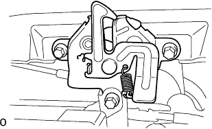

Radiator ASSY removal |
| 1. Cooling solution (Toyota genuine super LLC) extract |
Open the radiator kayatsu.
Loosen the radiator drain kotsu plug and extract the cooling solution.
| 2. The engine Anda cover LH is removed |
Remove two bolts and two screws and remove the engine undercover LH.
| 3. The engine Anda cover RH is removed |
Remove two bolts and two screws.
Remove the nut and remove the engine undercover RH.
| 4. Radiator Inlet House Cut |
Remove the clamp and remove the radiator inlet hot.
| 5. Radiator outlet hole cut off |
Remove the clamp and remove the radiator outlet hot.
| 6. Oil cool line lettuce hole cut off |
Remove the clamp and disconnect the oil cool line lettuce hose.
| 7. Oil Cooler Outlet House Cut |
Remove the clamp and separate the oil cooler outlet hot.
| 8. Radiator Grill W/Radiator Support Seal UPR |
Use the clip resover to remove the six clips.
 |
Paste the protective tape around and on the radiator support seal UPR and the radiator support seal UPR.
Use a flathead screwdriver with a protective tape to remove the support seal behind the vehicle with the three claws in the figure.

Lift the radiator support seal UPR and remove the radiator grilled claws from the gaps.

Check that the claws are off and remove the radiator grill.
Remove the radiator support seal UPR.
| 9. Food lock ASSY removes |
Remove the three bolts and remove the Bonnettorotsuku ASSY.
|  |
Cut the Bonnetro Torotsuku Control Cable ASSY from Bonnettorotsuku ASSY.
| 10. Food rock support SUB-ASSY |
Remove the three bolts and remove the hood (food) rock support.
| 11. Remove the food rock support brace |
Separate the clamp of the bonnet lock control cable.
Remove the four bolts and remove the bonnet (food) rock support brace.
| 12. Radiator support SUB-ASSY UPR is removed |
Separate the horn ASSY connector and clamp.
Remove the four bolts and one clip and remove the radiator support UPR.
| 13. Radiator ASSY |
Cooling fan motor connector and wire harness clamp are separated and radiator ASSY is removed from the vehicle.
 |
Remove the three bolts and remove the Juanshyuroud W/Juan.
 |
Remove the two bolts and remove the waterfifa.
From the radiator associate, remove the sabled radiator support Kutsushion and Radiator Support LWR.